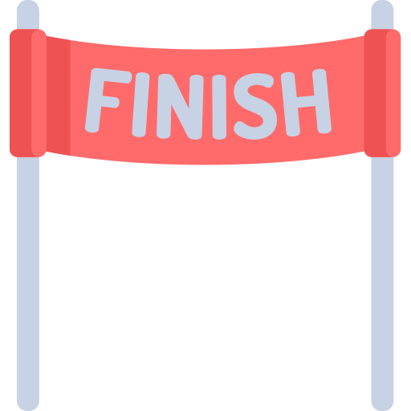

<ion-header [translucent]="true">
  <ion-toolbar>
    <ion-title>
      Terminado
    </ion-title>
    
  </ion-toolbar>
</ion-header>

<ion-content [fullscreen]="true">
 <!-- Componente donde se muestran las listas -->
<app-listas></app-listas>
</ion-content>
